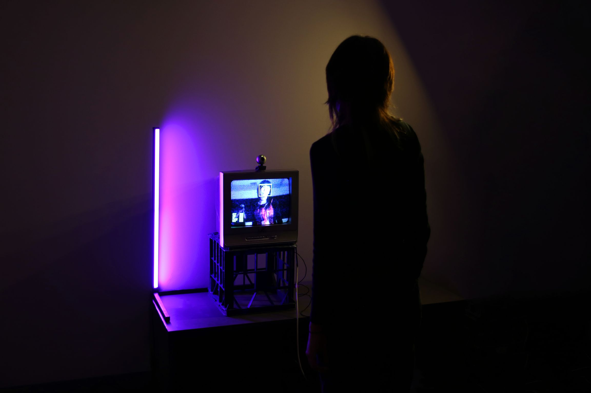
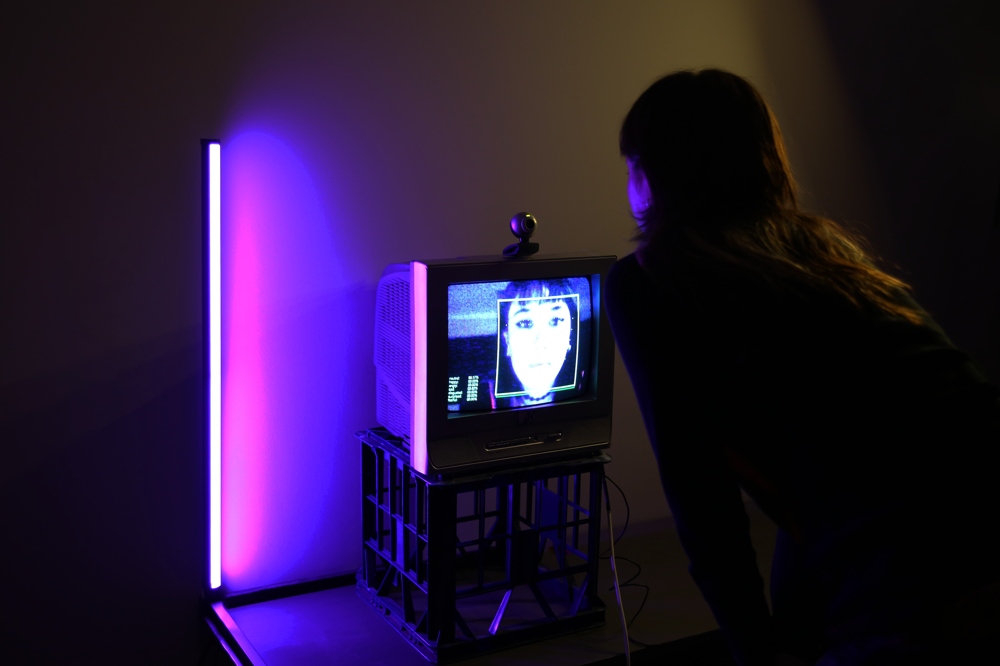
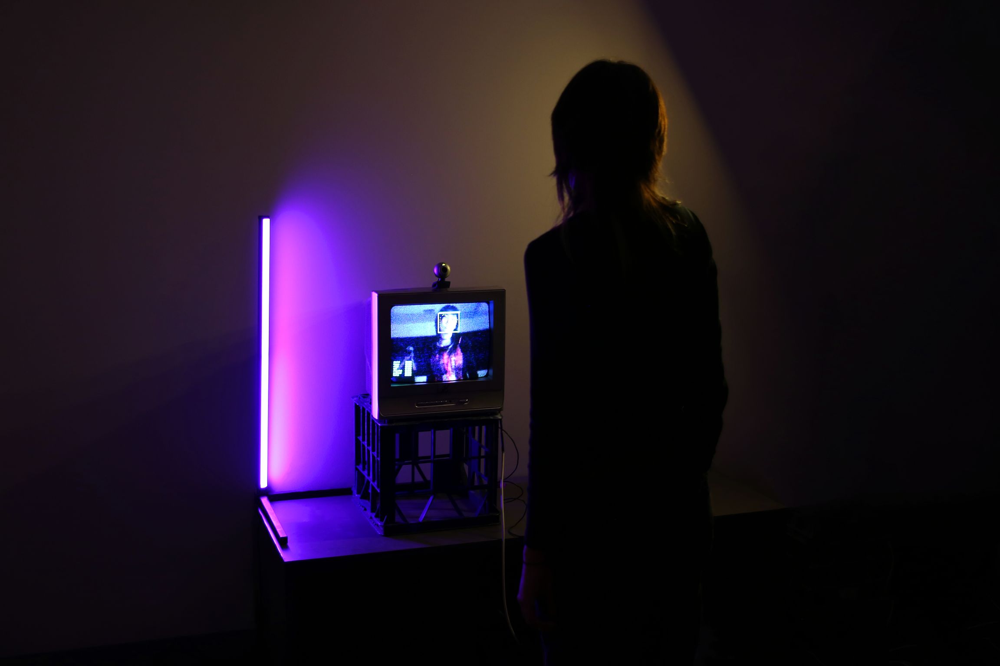
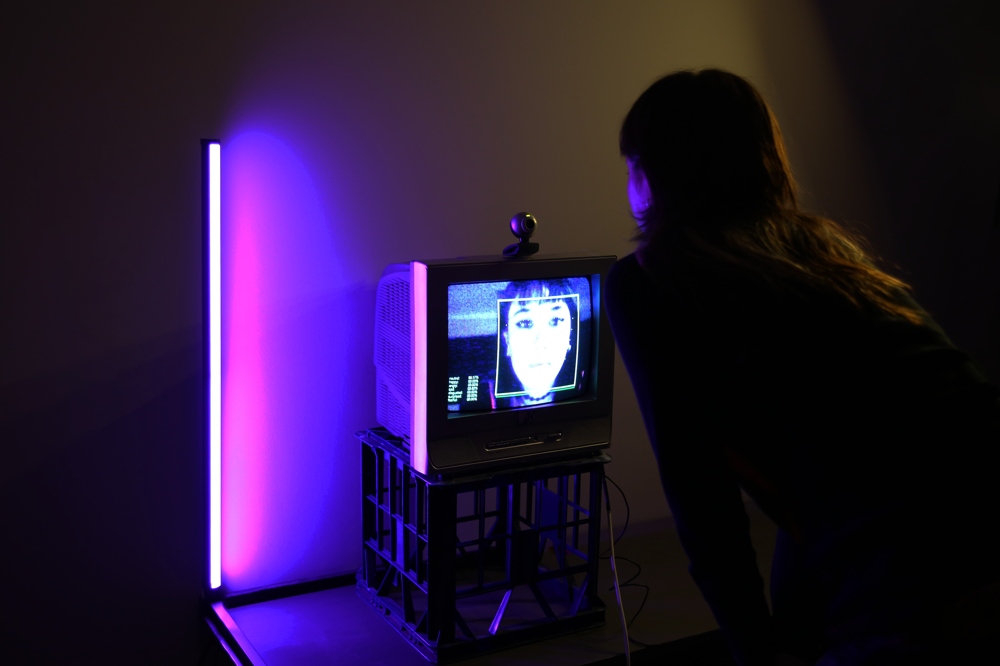

#Surveillancecore pt.1 is an interactive installation made in collaboration with Hannah Ogawa. Inspired by Nam June Paik's TV Buddha (1976), the camera is coded to track people's faces and detect their emotions. By transforming personal interactions into data, the installation prompts viewers to reflect on surveillance technology and its capability to blur the boundaries between connection and control. It invites critical examination of privacy, agency, and the ethics of observation in the digital age.
 


